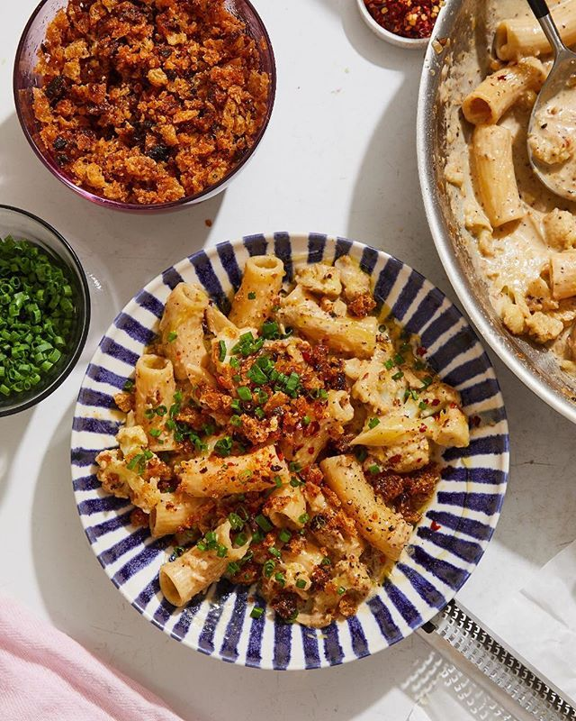

Creamy Cauliflower Pasta with Pecorino Bread Crumbs
aka bougie mac n cheese you can pretend is healthy
Ingredients
- Kosher salt and black pepper
- 8 oz rigatoni, ziti or campanelle
- 6 tbsp olive oil
- 3/4 cup bread crumbs
- 1/2 grated pecorino cheese
- 1 large shallot, finely chopped
- 1 medium head of cauliflower, sliced into 1/2 thick pieces (it will be v crumbly)
- 1 cup heavy cream
- 1 tbsp lemon zest
- 1/2 chives, finely chopped
- Crushed red pepper flakes (optional)
Instructions
- Bring a large pasta pot filled with salted water to a boil. Cook the pasta until al dente; drain and reserve about 1 cup of the cooking water.
- Meanwhile, heat 3 tablespoons olive oil in a large skillet over medium heat. Add bread crumbs and season with salt and pepper. Cook, stirring occasionally, until they’re evenly toasted and golden brown, 4 to 6 minutes.
- Add 1/4 cup pecorino and toss to coat, letting the cheese melt and clump among the bread crumbs (think granola-like clusters). Remove from heat and transfer to a small bowl or plate; set aside.
- Wipe out the skillet and heat remaining 3 tablespoons oil over medium heat. Add shallot and cauliflower and season with salt and plenty of black pepper. Cook, tossing occasionally, until the cauliflower has completely softened and both the cauliflower and shallots are beginning to caramelize and brown, 12 to 15 minutes.
- Add heavy cream and 1 tablespoon lemon zest and bring to a simmer, then let the cream reduce and thicken, 2 to 4 minutes. Season with salt and plenty of pepper; if pasta is still cooking, remove from heat and set aside until pasta is ready.
- Return the skillet to medium heat and add the pasta to the cauliflower, along with the remaining 1/4 cup pecorino and 3/4 cup of the pasta water. Cook, tossing to coat the pasta and thicken the sauce until it’s thick and glossy, and almost resembles macaroni and cheese, adding more pasta water by the tablespoon as needed, 4 to 6 minutes.
- Remove from heat. Divide pasta among bowls and top with pecorino bread crumbs, chives, more lemon zest, red-pepper flakes (if using) and more cheese if you like.